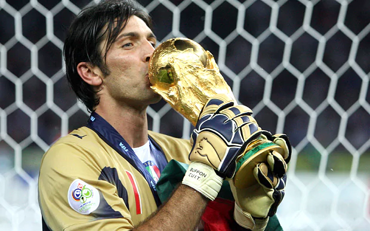

Gianluigi Buffon
Gianluigi Buffon é um golero nascido na italia,atualmente sem clube. Em 2001 ele foi vendido pelo Parma para a Juventos,e foi a contratação de goleiro mais caro até os dias atuais, ele é o terceiro jogador aparticipa de 5 copas do mundo,e considerado por muitos um dos melhores goleiros da historia do futebol,ele fez parte do titulo da italia na copa de 2006. Ele que denuncio ao arbrito a cebaçada de Zinédine Zidane em seu companheiro de time, e pediu desculpa para Zidane pela denuncia , e se tornaram amigos pela passagem de Zidane pela Juventos.

Oque fez
- Campeão da Copa de 2006
- Considerado melhor goleiro dos ultimos 25anos,em 2013 pela IFHHs
- De 2013 até 2018 Foi campeão com a Juventos da liga italiana(Serie A Tim)
- Ganhou melhor goleiro do mundo de 2017
- Ganhou o Golden Foot
- Luva de ouro em 2006
- Fifa 100